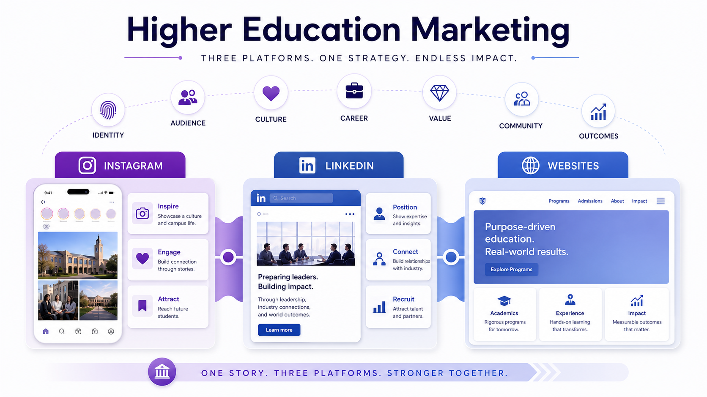

Higher Ed Marketing Across Platforms
This capstone explores how universities and business schools present themselves across Instagram, LinkedIn, and business school websites.

I compared a selected group of universities and business schools to see how higher education marketing changes across platforms. Instagram often shows personality and campus feeling. LinkedIn highlights professional identity and audience response. Websites bring the full program story together through outcomes, culture, academics, and value.
I looked at the themes schools used in Instagram posts, including student life, career outcomes, school pride, campus culture, and other visual or personality-driven content.
I looked at LinkedIn posts and comments to compare what schools published with how people responded to that content.
I reviewed business school websites to see how programs presented value, career outcomes, culture, flexibility, and fit.
The schools in this sample were grouped into three comparison categories. This helped me look at elite academic brands, large public institutions, and schools that felt closer to TCU’s competitive environment.
These schools have strong national reputations and highly recognizable academic brands.
Logo source: Duke Fuqua
Logo source: Notre Dame Mendoza
Logo source: Northwestern Kellogg
These large public universities have big audiences, strong school identity, and major institutional reach.
Logo source: Texas McCombs
Logo source: Georgia Terry
Logo source: Michigan Ross
These schools were included because they feel more directly connected to the competitive space around TCU, regional comparison, and similar prospective student audiences.
Logo source: SMU Cox
Logo source: TCU Neeley
Logo source: Baylor Hankamer
Logo source: Vanderbilt Owen
This map shows the schools included in the comparison. It adds a geographic view of the sample and helps show how the selected schools are spread across different regions.